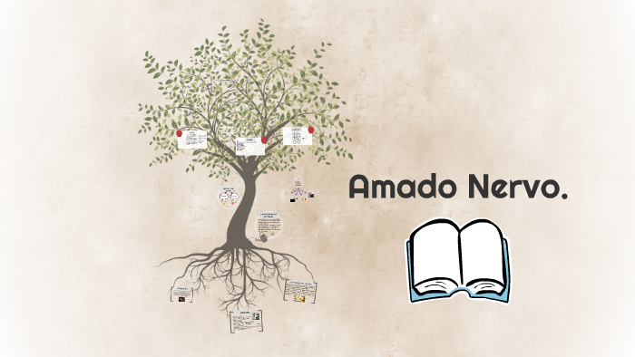

Muy cerca de mi ocaso, yo te bendigo, vida, porque nunca me diste ni esperanza fallida, ni trabajos injustos, ni pena inmerecida; porque veo al final de mi rudo camino que yo fui el arquitecto de mi propio destino; que si extraje las mieles o la hiel de las cosas, fue porque en ellas puse hiel o mieles sabrosas: cuando planté rosales, coseché siempre rosas. ...Cierto, a mis lozanías va a seguir el invierno: ¡mas tú no me dijiste que mayo fuese eterno! Hallé sin duda largas las noches de mis penas; mas no me prometiste tan sólo noches buenas; y en cambio tuve algunas santamente serenas... Amé, fui amado, el sol acarició mi faz. ¡Vida, nada me debes! ¡Vida, estamos en paz!
Si pudiera vivir nuevamente mi vida, en la próxima trataría de cometer más errores. No intentaría ser tan perfecto, me relajaría más. Sería más tonto de lo que he sido, de hecho tomaría muy pocas cosas con seriedad. Sería menos higiénico. Correría más riesgos, haría más viajes, contemplaría más atardeceres, subiría más montañas, nadaría más ríos. Iría a más lugares adonde nunca he ido, comería más helados y menos habas, tendría más problemas reales y menos imaginarios. Yo fui una de esas personas que vivió sensata y prolíficamente cada minuto de su vida; claro que tuve momentos de alegría. Pero si pudiera volver atrás trataría de tener solamente buenos momentos. Por si no lo saben, de eso está hecha la vida, sólo de momentos; no te pierdas el ahora. Yo era uno de esos que nunca iban a ninguna parte sin un termómetro, una bolsa de agua caliente, un paraguas y un paracaídas; si pudiera volver a vivir, viajaría más liviano. Si pudiera volver a vivir comenzaría a andar descalzo a principios de la primavera y seguiría descalzo hasta concluir el otoño. Daría más vueltas en calesita, contemplaría más amaneceres, y jugaría con más niños, si tuviera otra vez vida por delante. Pero ya ven, tengo 85 años… y sé que me estoy muriendo.
Cuando emprendas tu viaje a Ítaca pide que el camino sea largo, lleno de aventuras, lleno de experiencias. No temas a los lestrigones ni a los cíclopes ni al colérico Poseidón, seres tales jamás hallarás en tu camino, si tu pensar es elevado, si selecta es la emoción que toca tu espíritu y tu cuerpo. Ni a los lestrigones ni a los cíclopes ni al salvaje Poseidón encontrarás, si no los llevas dentro de tu alma, si no los yergue tu alma ante ti. Pide que el camino sea largo. Que muchas sean las mañanas de verano en que llegues -¡con qué placer y alegría!- a puertos nunca vistos antes. Detente en los emporios de Fenicia y hazte con hermosas mercancías, nácar y coral, ámbar y ébano y toda suerte de perfumes sensuales, cuantos más abundantes perfumes sensuales puedas. Ve a muchas ciudades egipcias a aprender, a aprender de sus sabios. Ten siempre a Ítaca en tu mente. Llegar allí es tu destino. Mas no apresures nunca el viaje. Mejor que dure muchos años y atracar, viejo ya, en la isla, enriquecido de cuanto ganaste en el camino sin aguantar a que Ítaca te enriquezca. Ítaca te brindó tan hermoso viaje. Sin ella no habrías emprendido el camino. Pero no tiene ya nada que darte. Aunque la halles pobre, Ítaca no te ha engañado. Así, sabio como te has vuelto, con tanta experiencia, entenderás ya qué significan las Ítacas.
Mi abuela de niño me decía que cuando ella muriera me iba a estar cuidando desde el cielo, cuando fui adolescente tuve mis dudas sobre el cielo, después me hice adulto y tuve la entera certeza de que el cielo no existe. ¿Qué cómo lo sé? No lo sé, estoy seguro de que es así, que el verdadero paraíso es morir y no sufrir nuevamente los achaques del cuerpo, las crudas, el temor a las enfermedades, las preocupaciones económicas, el ya no toparse con personas que hacen la vida poco soportable. Nunca le quise decir a mi abuela que había dejado de creer en el cielo. Recuerdo que estaba en la cama enferma y le preguntaba si podía hacer algo por ella y me pedía que sacara un libro de un cajón que estaba en su cuarto, tenía oraciones para los enfermos, yo lo leía, rezaba el rosario con ella. Y no le decía a la abuela que no creía porque no la quería mortificar, a ella le preocupaba que toda su familia creyera para que pudiésemos reunirnos después de la muerte, para ella la falta de fe era una falta severa a Dios quien siempre nos procuraba, por eso todos teníamos salud y estábamos en un núcleo amoroso, para ella todo eso era la mejor prueba. Los últimos días de mi abuela me puse más triste al pensar que si es que no existe el cielo ya no habrá oportunidad de vernos otra vez, me convenía creer por motivos amorosos, para volver a verla y abrazarla, me ponía tan triste esa incertidumbre, y era tan duro, también pensaba que el día de mi muerte dejaría todos mis recuerdos y con ello todos a los que había amado y de los que había aprendido. Le quería preguntar a mi abuela ¿Si es que existe Dios para que quiere que seamos eternos? Luego pienso en que si Dios existe y nos quiere tanto como yo a mi abuela, a mis papás y mis hermanos, a mí, me gustaría que ese amor fuese eterno y no dejar de verlos. Uno quiere entender a Dios cuando apenas puede entenderse a sí mismo. Una semana después de que la abuela se fue me la encontré en la sala de la casa: —Usted no esté triste mijito. Yo estoy bien, sí existe el paraíso. Desperté, tomé el desayuno con mi mamá, le dije creo que la abuela ya está con Dios. La abuela y Dios Cuentos, Quetzal Noah.
Juventud, divino tesoro, ¡ya te vas para no volver! Cuando quiero llorar, no lloro... y a veces lloro sin querer... Plural ha sido la celeste historia de mi corazón. Era una dulce niña, en este mundo de duelo y de aflicción. Miraba como el alba pura; sonreía como una flor. Era su cabellera obscura hecha de noche y de dolor. Yo era tímido como un niño. Ella, naturalmente, fue, para mi amor hecho de armiño, Herodías y Salomé... Juventud, divino tesoro, ¡ya te vas para no volver! Cuando quiero llorar, no lloro... y a veces lloro sin querer... Y más consoladora y más halagadora y expresiva, la otra fue más sensitiva cual no pensé encontrar jamás. Pues a su continua ternura una pasión violenta unía. En un peplo de gasa pura una bacante se envolvía... En sus brazos tomó mi ensueño y lo arrulló como a un bebé... Y te mató, triste y pequeño, falto de luz, falto de fe... Juventud, divino tesoro, ¡te fuiste para no volver! Cuando quiero llorar, no lloro... y a veces lloro sin querer... Otra juzgó que era mi boca el estuche de su pasión; y que me roería, loca, con sus dientes el corazón. Poniendo en un amor de exceso la mira de su voluntad, mientras eran abrazo y beso síntesis de la eternidad; y de nuestra carne ligera imaginar siempre un Edén, sin pensar que la Primavera y la carne acaban también... Juventud, divino tesoro, ¡ya te vas para no volver! Cuando quiero llorar, no lloro... y a veces lloro sin querer. ¡Y las demás! En tantos climas, en tantas tierras siempre son, si no pretextos de mis rimas fantasmas de mi corazón. En vano busqué a la princesa que estaba triste de esperar. La vida es dura. Amarga y pesa. ¡Ya no hay princesa que cantar! Mas a pesar del tiempo terco, mi sed de amor no tiene fin; con el cabello gris, me acerco a los rosales del jardín... Juventud, divino tesoro, ¡ya te vas para no volver! Cuando quiero llorar, no lloro... y a veces lloro sin querer... ¡Mas es mía el Alba de oro!
“El verdadero lugar de nacimiento es aquel donde por primera vez nos miramos con una mirada inteligente: mis primeras patrias fueron los libros y en menor medida las escuelas que preparan para las vicisitudes de la existencia humana…lugares de las relaciones extrañamente íntimas y extrañamente elusivas que existen entre el profesor y el alumno; donde se escuchan a las sirenas cantando en lo hondo de una voz cascada que por primera vez revela una obra maestra o nos explica una idea nueva.” Marguerite Yourcenar en Memorias de Adriano.